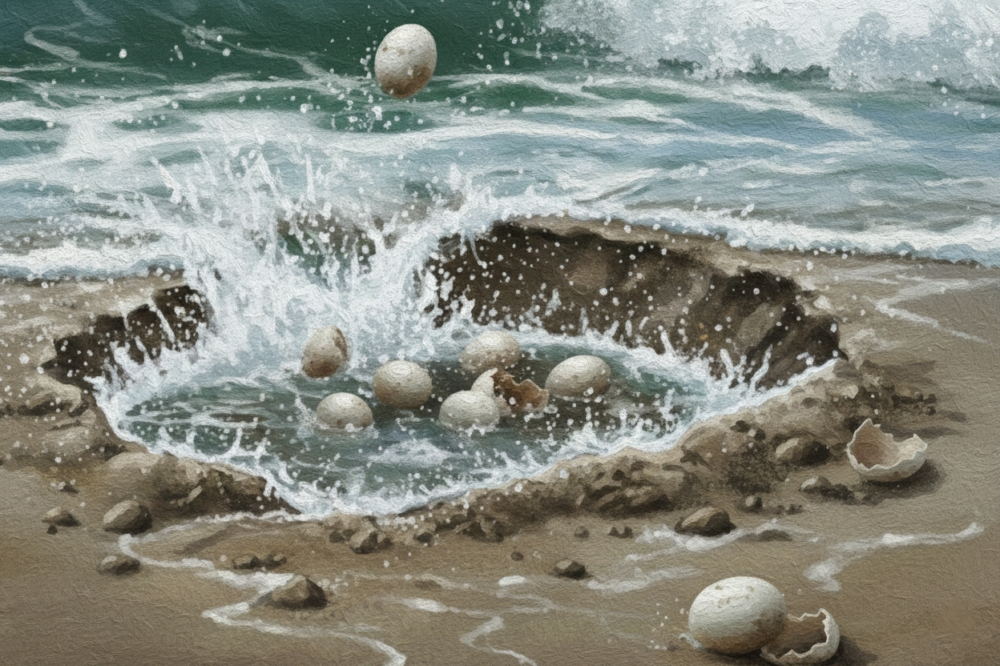
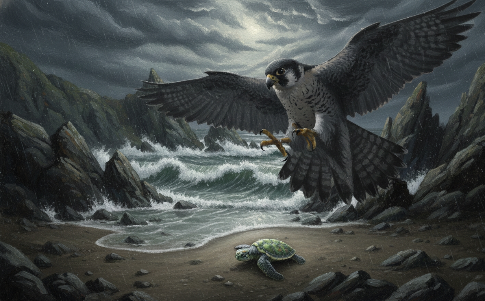
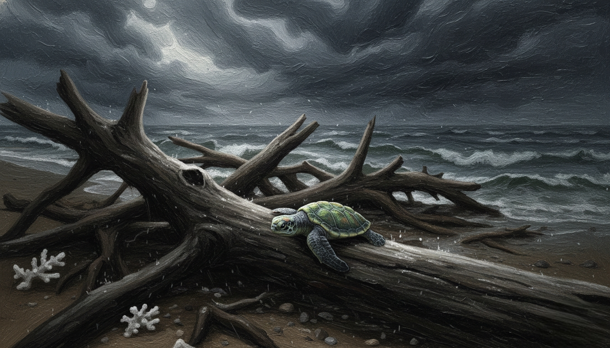

颱風引發的滔天巨浪會直接沖刷和淹沒產卵的沙灘，將卵窩沖散或沖毀，導致大量卵無法孵化。受颱風浪況影響，長時間淹水會阻礙卵窩氣體交換，抑制胚胎發育。

天敵如海鷗、螃蟹、野狗等會在沙灘上等待稚龜出現，由於牠們的背殼不夠堅硬、游泳速度不夠快，缺乏足夠的防禦能力，導致小綠蠵龜在第一年的死亡率極高，僅約1%能長大成成龜。

強烈風浪會將大量的珊瑚礁石、漂流木及其他雜物堆積在產卵沙灘上，除了阻礙小綠蠵龜前往大海，還可能因為颱風帶來的巨浪而迷失方向，導致體力耗盡，甚至擱淺在沙灘上死亡。